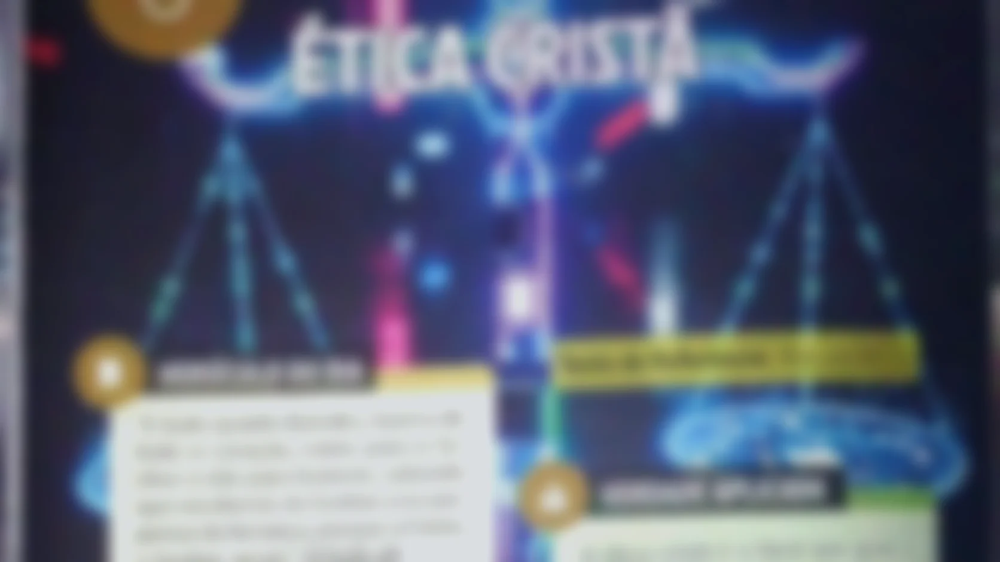

Apoio Pedagógico — Lição 06
Texto de Referência
Rm 14.21
Verdade Aplicada
A ética cristã é o farol que guia o crente na complexa realidade do mundo digital.
Objetivos
- Aplicar o amor ao próximo na tecnologia, coibindo cyberbullying e difamação;
- Promover a Mordomia da Criação no uso da tecnologia, evitando o uso irresponsável;
- Estimular o discernimento e a busca da verdade, combatendo a desinformação.
Ponto-Chave
“O uso ético da tecnologia edifica o próximo e glorifica a Deus, evitando tudo que cause tropeço, ofensa ou desvio dos princípios cristãos.”
Estrutura da lição
- 1. PRINCÍPIOS BÍBLICOS PARA O USO RESPONSÁVEL DA TECNOLOGIA
- 1.1. Amor ao próximo e edificação
- 1.2. Mordomia da Criação e da ferramenta
- 2. O IMPACTO DA TECNOLOGIA NA VIDA SOCIAL E FAMILIAR
- 2.1. Benefícios da conexão e desafios da dependência
- 2.2. Tecnologia e a dinâmica familiar
- 3. A NECESSIDADE DE DISCERNIMENTO NA ERA DIGITAL
- 3.1. Discernimento para escolher o que edifica
- 3.2. Sabedoria para usar a tecnologia com equilíbrio
“A vontade divina nem sempre concorda com a nossa. E aí está o primeiro passo para andarmos em Santidade: abdicar do que queremos para fazer o que Ele quer”.
Pr. Marcos Flávio Oliveira
Champlin, ao comentar Romanos 14, afirma que somos responsáveis por nossos irmãos, devendo agir com consciência cristã. Ele destaca que o versículo 21 orienta especialmente os “fortes na fé” a controlarem sua liberdade, evitando abusos que prejudiquem os outros. Essa restrição voluntária da conduta é apresentada como atitude correta, em contraste com o uso desordenado da liberdade, que pode gerar dano espiritual e escândalo. Dessa forma, a liberdade cristã deve ser exercida com amor, equilíbrio e responsabilidade.
R.N. Champlin. O Novo Testamento interpretado versículo por versículo: Atos, Romanos. SP: Editora Candeia, 1998, p. 850.
Complementando
A aplicação da ética cristã na era digital transcende a simples abstenção, pois exige um discernimento ativo. O princípio de Filipenses 4.8 — “tudo que é verdadeiro, tudo que é honesto” — funciona como um filtro cognitivo e comportamental essencial para o consumo das mídias. Em vez de consumir passivamente o conteúdo digital, o indivíduo é instado a “examinar tudo” e “reter o bem” (1Ts 5.21). Isso significa treinar a habilidade de avaliar se o uso da tecnologia (seja redes sociais ou informação) está alinhado com o amor ao próximo (Fp 2.4) e a busca pela verdade (Jo 8.32), evitando a propagação da falsidade e do cyberbullying.
O uso excessivo da tecnologia pode prejudicar os relacionamentos e a vida familiar, o que exige discernimento para priorizarmos o contato humano genuíno.